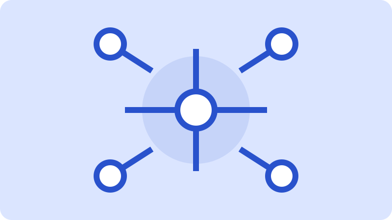
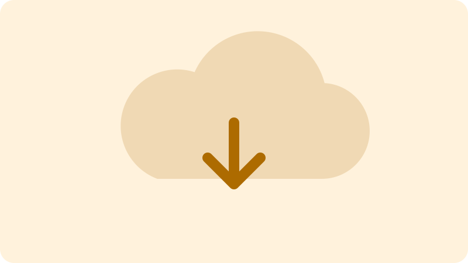

Central de Atendimento
Soluções para manter sua rede conectada
Atendimento para conexões, equipamentos, sistemas e segurança da informação. Registre sua solicitação e acompanhe cada etapa do suporte.
Serviços disponíveis

Rede
Configuração de redes
Instalação e ajuste de conexões cabeadas, pontos de rede e roteadores.
Solicitar atendimento →
Suporte
Suporte técnico
Ajuda com internet, acesso a sistemas e configuração de dispositivos.
Solicitar atendimento →
Segurança
Segurança da informação
Orientação sobre senhas, acessos, antivírus e proteção dos dados.
Solicitar atendimento →
Monitoramento
Monitoramento de serviços
Acompanhamento de servidores, sistemas internos e recursos compartilhados.
Solicitar atendimento →